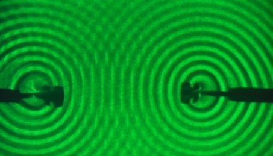
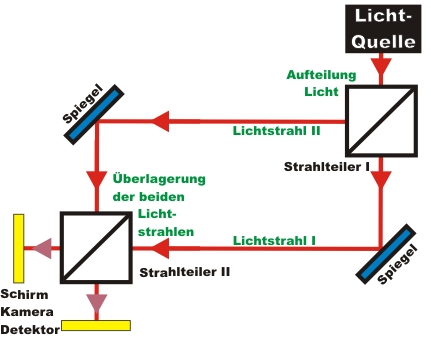

Interference Chapter 1:
Basics: Bright light in the interferometer
Interference is a phenomenon we can see in many parts of our daily lives. On the following page, the basics on interference are explained first by water waves. In the second paragraph we deal with interference of bright light in the interferometer.
In the last paragraph the measuring method for single photon interference is motivated.
Interference of water waves
If two water waves meet, the respective wave crests and wave troughs overlay with each other. If two water waves are generated periodically, in the overlay region patches of high wave crests and low wave troughs (constructive interference) can be watched. Destructive
interference occurs where a wave crest meets a wave trough. The time-consistent pattern of constructive and destructive interference is called the interference pattern. For an interference pattern, at least two periodical senders with a fixed phase correlation are needed. The two senders could be e.g. two pads in a water basin that are dipped into the water periodically (pic. 1).

pic. 1: Interference of water waves by two periodical sources
In acoustics also, the interference of sound waves can be sensed. The two senders here could be e.g. two loudspeakers which send a tone of identical frequency and phase correlation each. The interference pattern can be perceived by ear or with the help of a microphone. Between the two loudspeakers there are patches with constructive interference (high volume) and destructive interference (low volume).
Interference of bright light
Interference can also be watched in bright light. For an interference pattern, light from two separate light sources is overlapped. In order to watch an interference pattern, both light sources must have a time-consistent fixed phase correlation. Due to the high frequency of light, a fixed phase correlation of two independent light sources is difficult to realize in an experiment. For interference patterns from light, the light beam is therefore split at a 50% beam splitter, resulting in two equally bright light beams (pic. 2). Both light beams run along different routes and are overlapped at the second beam splitter. Such a set-up is generally known as an interferometer.

pic. 2: Interferometer: The light beam is split into two beams and overlapped again
If the difference between the routes of lightbeams I and II is smaller than the coherence length of the light, an interference pattern can be observed behind the second beam splitter (pic. 3). In this pattern, bright patches (constructive interference) and dark patches (destructive interference) are clearly visible. If a part of the interference picture is dark, the light is not absorbed but transferred onto the other monitoring screen. On the second screen, the inverse interference pattern to that of the first screen can be watched. In basic school interferometers, mostly interference rings can be watched. The rings result from the beam divergence of the flared laser pointer. In our experiments, we use nearly parallel laser light, which means our circle radiuses become very large, and only interference fringes can be observed.
Interference is a phenomenon which only occurs with waves. The interference pattern of light can be explained if light is attributed a wave-like character. The set-up sketched in pic. 2 was developed in the years 1891/1892 by the scientists Mach and Zehnder independently of each other, and has since become known as the Mach-Zehnder interferometer.

pic. 3: Interference pattern of bright laser light - recorded with a webcam
constructive (red lines) and destructive (black lines) interference
Simplification of the interferometer
The set-up for experiments should be rather simple and consist of only a few components. The Mach-Zehnder interferometer sketched above can be simplified by replacing the two beam splitters by one beam splitter (pic. 4). With this simplified interferometer, the light from the light source is initially split into two light beams at the beam splitter. The light beams then hit a mirror behind the beam splitter, and are then overlapped again at the same beam splitter. This interferometer gets its name from the scientist Michelson (1852-1931).
pic. 4: Set-up of a Michelson-interferometer. Left: the sketch, right: the experiment
Alteration of the two routes in the interferometer
If the length of one interferometer arm is continually altered, the wave crests and wave troughs impact out of phase. In the experiment, a translation stage is used in order to alter the route in light beam II (see pic.
4 right). With the translation stage, an increment of up to 3nm (!) can be realized. A steadily wandering interference pattern can be observed (video 1). For the video, the observation screen was replaced by a camera. Please note: The video may judder if the system requirements are not sufficient.
Video 1: Interference pattern where the route is altered by ca. 100nm/s in an interferometer arm
Possibilities for taking the interference picture
An interference pattern of light can be observed with the monitoring screen, with a camera or with a detector for bright light. For taking a picture of the interference pattern, the translation stage may remain in a fixed position or it may be moved slowly and continuously. In the animation below, the different methods are introduced together with an explanation. The last method is used for the subsequent interference experiments with single photons.
In the next chapter, the interferometer is not used with bright light, but with single photons. The detector for bright light is then replaced by a single photon detector. Instead of the bright red light, an announced single photon source is used. How do single photons react in the interferometer? Can a single photon actually interfere with itself?
To chapter 2: Interference of single photons
Back to overview
Autor: P. Bronner, Dezember 2008
Translation: G. Murphy